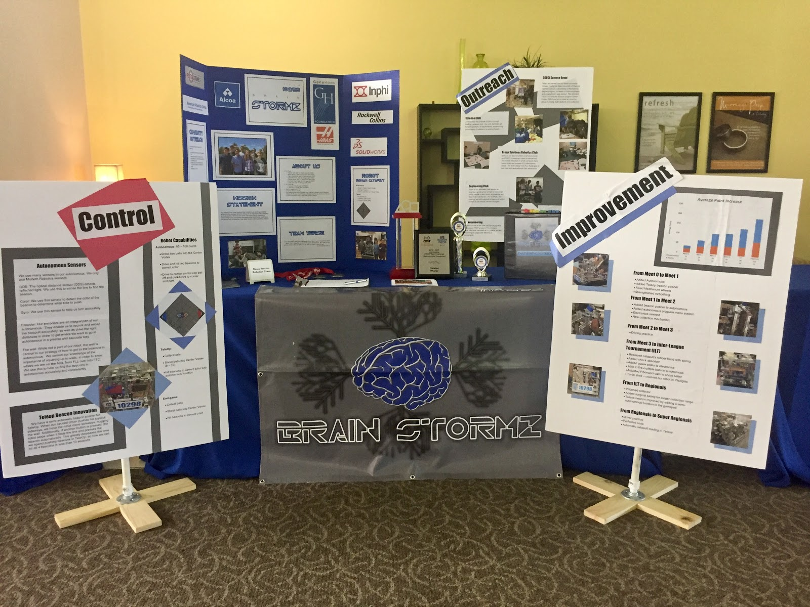
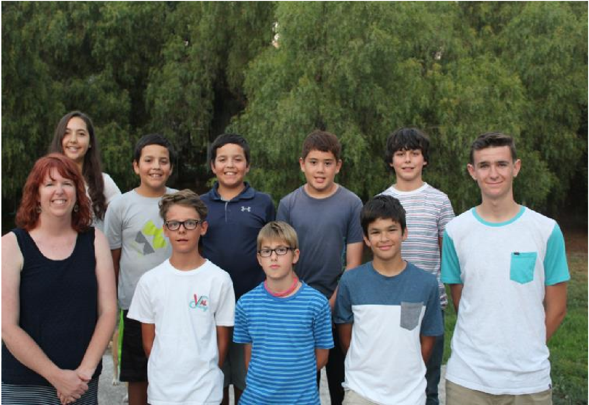
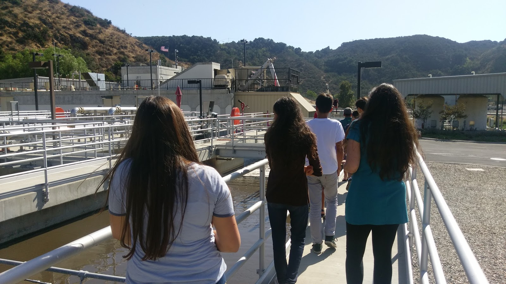
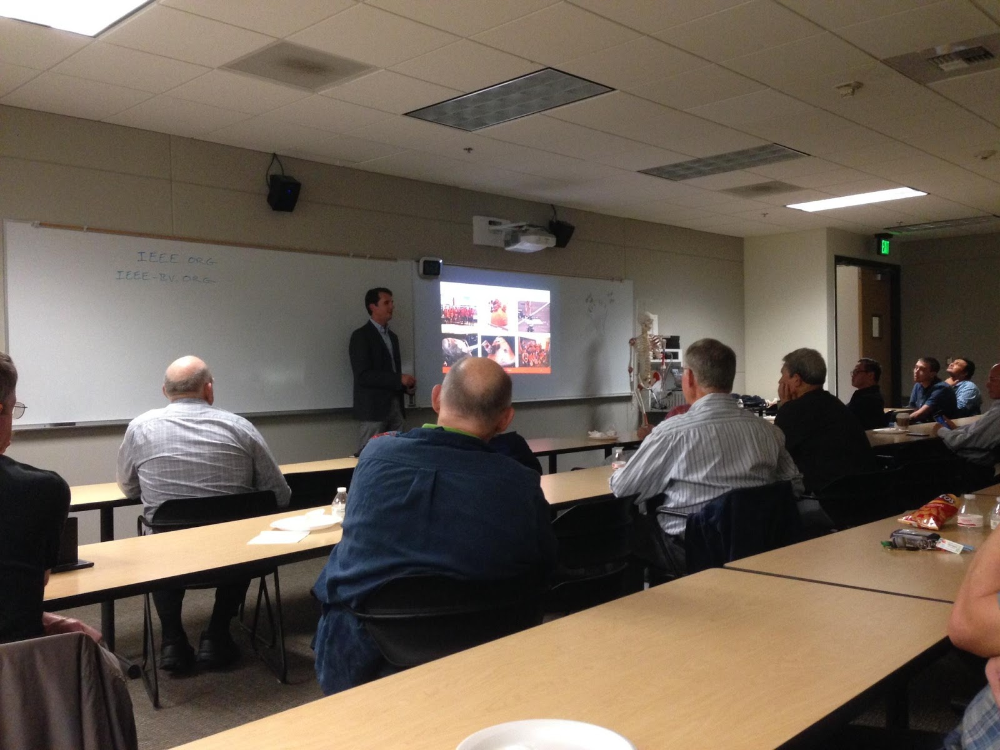

Outreach
Our team has been active in outreach to the community:
- We have been teaching a class of middle schoolers how to program and build robots, three years running
- Multiple team members are co-Presidents and members of an Engineering Club
- Multiple team members mentor a FLL Team
- Multiple students and coaches helped set up and volunteered at FLL Tournaments as referees and judges
Here is a timeline of our various outreach projects.
Linux - December 2015
| Location | Attendees | Time |
| Camarillo | Jacob | 3 Month Project |
In December 2015 Jacob started trying to make the Lego Mindstorms EV3 programming software run on Linux using Wine so that those using Linux could use the EV3 software without running it in a Windows VM.
Linux - Friday, February 23, 2016
| Location | Attendees | Time |
| Camarillo | Jacob | End of 3 Month Project |
On this day, Winetricks merged Jacob's script for installing the EV3 software using Wine into the Winetricks codebase. This was the first ever code to run the EV3 coding software that allows you to program the EV3 in Linux without the need of any emulator.
Lego Mindstorms Class - Friday, Sep. 2, 2016
| Location | Attendees | Time |
| Oxnard | Noah, Jacob | 11:00 AM - 11:55 AM |
This was the first day of the Lego robotics class that Noah and Jacob teach at their school. After explaining what robotics is to the kids, we had them build their first robot: a five minute bot. (https://drive.google.com/open?id=0B4M824JucHGZU3Yta0pDekRYWWs)
Mentoring FLL Team - Saturday, Sep. 3, 2016
| Location | Attendees | Time |
| Camarillo | Noah, Nathan | 1:00 PM - 3:00 PM |
Today Noah and Nathan went to help a local FLL team. They needed help in figuring out what missions to attempt, so they gave them some advice. We also helped them with some of their programming.
Lego Mindstorms Class - Friday, Sep. 16, 2016
| Location | Attendees | Time |
| Oxnard | Noah, Jacob | 11:00 AM - 11:55 AM |
This was the second robotics class that Noah and Jacob taught. In this class, the kids were taught about the importance of a well-built structure through an engineering challenge, requiring them to build the tallest structure they could in 18 minutes with spaghetti, tape, string, and a marshmallow. They were also given a vocabulary test on robotics parts in the Mindstorms kits.
Engineering Club - Monday, Sep. 19, 2016
| Location | Attendees | Time |
| Camarillo | Noah, Nathan | 7:30 PM - 9:00 PM |
Today Noah and Nathan lead the first meeting of their engineering club they do with their school. They built Lego Mindstorms EV3 robots for this meeting and did some battling with them - push the other robot off the mat or knock down the tower of tires of the opponent's side of the mat.
Lego Mindstorms Class - Friday, Oct. 7, 2016
| Location | Attendees | Time |
| Oxnard | Noah, Jacob | 11:00 AM - 11:55 AM |
On the third class, Jacob and Noah taught the students the basics of the programing software for the EV3 robots. This consisted of motor controls, sensor and wait switches, and loops.
Engineering Club - Monday, Oct. 10, 2016
| Location | Attendees | Time |
| Camarillo | Noah, Nathan | 7:30 PM - 9:00 PM |
Today Noah and Nathan led the second meeting of the Engineering Club, where we built bridges out of spaghetti and glue.
Lego Mindstorms Class - Friday, Oct. 21, 2016
| Location | Attendees | Time |
| Oxnard | Noah, Jacob | 11:00 AM - 11:55 AM |
Today, Noah built an obstacle course that the students would have to navigate through. For this class, the students built robots for the course, but they did not navigate it yet.
Science Club - Friday, Oct 21, 2016
| Location | Attendees | Time |
| Simi Valley | Daniel, Nathan | 7:00 PM - 8:30 PM |
At the first science club of the school year, Daniel (the President of Science Club) taught about how lasers work and how they are made. The club then made a laser maze and navigated it.
Lego Mindstorms Class - Friday, Nov. 4, 2016
| Location | Attendees | Time |
| Oxnard | Noah, Jacob | 11:00 AM - 11:55 AM |
Noah brought the same obstacle course from the last meeting, and the students brought the robots they had built the last class. This class, they competed to complete the obstacle course in the fastest time possible. The fastest time that the students were able to make it through the obstacle course was 1 minute and 57 seconds.
Engineering Club - Monday, Nov. 14, 2016
| Location | Attendees | Time |
| Thousand Oaks | Noah, Nathan | 7:30 PM - 9:00 PM |
Today at the Engineering Club meeting, Mr. Choi spoke about his experiences as an engineer.
FIRST Lego League Tournament - Friday-Saturday, Nov. 14-15, 2016
| Location | Attendees | Time |
| Camarillo | Friday: Jacob, Noah Saturday: Noah, Nathan |
Friday: 4:00 PM - 5:00 PM Saturday: 8:00 AM - 4:00 PM |
Friday: Jacob and Noah helped set up for an FLL Qualifying Tournament at La Reina High School.
Saturday: Noah volunteered as a referee, and Nathan volunteered as a core values judge.
Lego Mindstorms Class - Friday, Nov. 18, 2016
| Location | Attendees | Time |
| Oxnard | Noah, Jacob | 11:00 AM - 11:55 AM |
In the 6th class, Noah and Jacob taught the students how to create and use MyBlocks in the EV3 programming software. The students programmed a simple square up to line program that worked for all the students.
Science Club - Friday, Nov. 18, 2016
| Location | Attendees | Time |
| Simi Valley | Daniel | 7:00 PM - 8:30 PM |
Today, the Science Club learned about the movement of air by experimenting with vortex cannons and airzookas. Daniel led the club.
Lego Mindstorms Class - Friday, Dec. 2, 2016
| Location | Attendees | Time |
| Oxnard | Noah, Jacob | 11:00 AM - 11:55 AM |
Today, Noah and Jacob gave a second challenge to the students, with an element of FTC. One team was offense, and the second defense. The goal for the offense team was to score balls through a center objective, while the defense team had to stop them without touching their robot. In the end, the winning team was able to outscore by having a very effective defense, denying the other team points.
CSUCI Computer Science Senior Project Expo. - Thursday, Dec. 8, 2016
| Location | Attendees | Time |
| Oxnard | Daniel, David, Jacob, Josh, Nathan, Noah | 6:00 PM - 9:00 PM |
The Team was invited by Professor Isaacs at CSUCI to visit the Senior Project EXPO for their Computer Science program. Professor Isaacs took interest in our team after we reached out to him regarding an article that we read regarding the Mechatronix degree program that he is starting up at CSUCI. He also took us on a tour of their Lab they use for a NASA robotics competition. They have Local GPS system installed in the lab that can track their Drones positions to the mm.
Science Club - Friday, Jan. 20, 2016
| Location | Attendees | Time |
| Simi Valley | Daniel, Nathan | 7:00 PM - 8:30 PM |
Today at the science club, Mr. Flak, a geologist, came and talked about faults in the crust of the Earth.
Engineering Club - Sunday, Jan. 22, 2016
| Location | Attendees | Time |
| Valencia | Noah, Nathan, Josh, David, Daniel, Kimberly, Jacob | 7:30 PM - 9:00 PM |
At today's engineering club meeting, Noah and Nathan invited all of the members of the club to spectate the final zone D league meet.
Promotion Night Booth - Wed, June. 7, 2017
| Location | Attendees | Time |
| Westlake - Calvary Community Church | Noah, Nathan, Daniel, David, Josh, Olivia, Kimberly
Notetaker: Nathan |
6:00 PM - 9:00 PM |
Most of us attend the same school, Trinity Pacific, and tonight was our Promotion Night. Our school allowed us to demonstrate our robot, as well as give a small speech about FIRST, FTC, and our team. We also were allowed to set up a booth, where we can talk further with interested people. We originally intended to have our robot drive around on the stage, but unfortunately, we encountered technical difficulties and were unable to do so. We explained more about FIRST and talked about our season to a crowd of around 400 people. We also played a 3-minute video we had made that showed highlights of our season, from our early meetings and league meets to elimination rounds in Houston. It was overall a great night, and we had people come up to us afterwards and ask for more information.

Here is a photo of our booth.
FLL Introduction Meeting - Wed, July. 19, 2017
| Location | Attendees | Time |
| Camarillo - The Lab | Noah
Notetaker: Noah |
6:30 PM - 9:00 PM |
Today I was able to introduce all the different families of the kids on the new FLL team we started this season. I asked our school if we could start and teach a FLL team at our school, and they approved, and so we started team 32221, which has 9 members in its inaugural season. I cooked hotdogs for everyone and the families brought other food. I then lead a meeting explaining to the families what the season would entail. Then I showed the kids our bot from FTC and how it works.

Connecting with Professionals - Mon, Aug. 21, 2017
| Location | Attendees | Time |
| San Diego - Qualcomm | Nathan
Notetaker: Nathan |
2:00 PM - 5:00 PM |
Nathan was blessed with the opportunity to job shadow at Qualcomm, the game presenting sponsor for this season. He went down to the corporate headquarters in San Diego, California, and got to meet some of the engineers there and take a tour. He also got some programming advice for one of last year's problems (driving straight with a gyro autocorrect not overcorrecting). He got to see some of their projects, and even got to see how one of the engineers hacked into a computer! Overall he had a great time, and learned a lot, both for the team, but also for his own knowledge.
Connecting with Professionals - Fri, Aug. 25, 2017
| Location | Attendees | Time |
| Woodland Hills - Go Engineer | Noah, Nathan, Daniel, Josh, Jacob, Olivia
Notetaker: Nathan |
9:00 AM - 12:00 PM |
We had been talking about using CAD for our robots for the past several seasons, but now we decided to actually do it. We contacted Go Engineer, a service that teaches professionals in Solidworks, 3D printing, and machine shopping. They offered to give us a free, one on one meeting with one of their teachers to teach us the basics of Solidworks. We went over there and learned about creating parts and assemblies. Afterwards he showed us some of their other 3D printing creations, and told us about their various projects. It overall was an excellent experience, and we are sure to use CAD in designing our robot this season!
FLL Meeting - Tue, Aug. 29, 2017
| Location | Attendees | Time |
| Thousand Oaks - Trinity Pacific | Noah, Nathan
Notetaker: Nathan |
8:50 AM - 10:50 AM |
Today was the first official meeting of FLL team 32221! We discussed about the basics of FLL and began discussing team names and project ideas. The kickoff took place during the meeting, but, unfortunately, we could not use the materials for the games because the Wifi was so bad. The kids seemed excited, and the season has begun!
FLL Meeting - Tue, Sept. 5, 2017
| Location | Attendees | Time |
| Thousand Oaks - Trinity Pacific | Noah, Nathan
Notetaker: Nathan |
8:50 AM - 10:50 AM |
Today was the second meeting of team 32221. We decided on our team name to be the Thunder Chickens, and we did begin discussing project ideas and robot ideas. We mostly made our progress on the project, where we brainstormed and discussed and assigned the kids to look into each of their various ideas.
Teaching Robotics Class - Fri, Sept. 8, 2017
| Location | Attendees | Time |
| Oxnard - Group Solutions | Noah, Nathan, Jacob
Notetaker: Nathan |
12:30 PM - 1:30 PM |
For several years now, our team has also taught a class at a biweekly homeschooling co-op called Group Solutions. This Beginning Robotics Class is one of the most popular classes at Groups. We have 12 students from 4th to 8th grade work on learning the basics of the Lego EV3 for the first half of the year, and engage in a mini FLL-like competition for the second. Today was our first class, and we introduced the kids to the Lego EV3 kit, as well as did a small engineering challenge of making towers of spaghetti and tape to lift marshmallows as high as possible. Judging from the first class, the kids are excited, and it looks like it's going to be a great year!
FLL Meeting - Tue, Sept. 12, 2017
| Location | Attendees | Time |
| Thousand Oaks - Trinity Pacific | Noah, Nathan
Notetaker: Nathan |
8:50 AM - 10:50 AM |
Today we had the third meeting for FLL 32221, the Thunder Chickens. We worked on a base robot as well as some basics of coding today on the robot side. The mission models were all complete and dual locked, so we were also able to strategize for what missions to accomplish. For the project, we further narrowed our focus to either focusing on dirty water or dams.
Engineering Club - Mon, Sept. 18, 2017
| Location | Attendees | Time |
| Camarillo - The Lab | Noah, Nathan, Josh, Olivia
Notetaker: Nathan |
7:30 PM - 9:00 PM |
Today we had our first meeting of the Engineering Club. Two years ago, Noah and Nathan started an Engineering Club at their school, where they have the kids do hands-on activities, go on field trips, and hear from various engineers. Now, in our 3rd year, we had our annual kickoff meeting, where we had a robot sumo competition! We had Josh and Olivia come as well to the meeting as members. This club has another purpose - we also use it as a way of recruiting for the team. This is how we recruited Josh in the first place. Overall the first meeting was a success, and we can't wait for the next one!
FLL Meeting - Tue, Sept. 19, 2017
| Location- | Attendees | Time |
| Thousand Oaks - Trinity Pacific | Noah, Nathan
Notetaker: Nathan |
8:50 AM - 10:50 AM |
Today was the next meeting for the Thunder Chickens. Now that the base robot was completed, we helped the kids work on some attachments for the game. We also continued explaining the basics of the programming to some of them. We have scheduled some field trips for them so that they can think more of their project idea.
Teaching Robotics Class - Fri, Sept. 22, 2017
| Location | Attendees | Time |
| Oxnard - Group Solutions | Nathan, Jacob
Notetaker: Nathan |
12:30 PM - 1:30 PM |
Today was the second class for the Group Solutions Beginning Robotics class. We had the kids name various parts of the Lego EV3 kit, and explained some basic engineering concepts using the Legos. We also had them build a base robot using the kits.
FLL Meeting - Tue, Sept. 26, 2017
| Location | Attendees: Noah and Nathan | Time |
| Thousand Oaks - Trinity Pacific | Notetaker: Nathan | 8:50 AM - 10:50 AM |
At the 5th meeting of FLL team 32221, the students voted and chose their project idea and their logo. We also continued work on building attachments for the various missions, most of which are now completed.
FLL Meeting - Tue, Oct. 3, 2017
| Location | Attendees | Time |
| Thousand Oaks - Trinity Pacific | Noah, Nathan
Notetaker: Noah |
8:50 AM - 10:50 AM |
This was our 5th robotics class with the Thunder Chickens. At this meeting we were able to instruct the kids how to further work on their project. However this meeting was mainly about the robot. With the Thunder Chickens' EV3 robot we showed them how to run an accuracy test. This led them to discover the inaccuracy of their bot. We also had the kids begin programming their first mission. For the rest of meeting the kids worked on updating their bot's motors.
Water Treatment Plant Tour - Tue, Oct. 4, 2017
| Location | Attendees | Time |
| Thousand Oaks- water Treatment Plant | Noah, Nathan
Notetaker: Noah |
2:30PM - 4:30PM |
The team members of the Thunder Chickens wanted to visit a water treatment plant to help them understand their project better. Our tour guide, Brandon was able to answer every question they had and was very helpful. The students were able to see how wastewater was split between solids and liquids, left out for bugs to eat the bacteria, eventually treated, and then pumped into the stream.

Teaching Robotics Class - Fri, Oct. 6, 2017
| Location | Attendees | Time |
| Oxnard - Group Solutions | Noah, Nathan, Jacob
Notetaker: Noah |
12:30 PM - 1:30 PM |
The Groups robotics class had its 3rd meeting today. This meeting's goal was to teach the 11 students the basics of programing. We were able to have four different laptops for the students to program on and I hooked up my laptop to a TV to show them what I was talking about. I went through the EV3 Mindstorms coding software. We taught them what each block did, including the drive steering blocks, loop blocks, wait blocks, etc. The kids seemed to have fun and learned a lot.
FLL Meeting - Fri, Oct. 6, 2017
| Location | Attendees | Time |
| Camarillo - The Lab | Noah, Nathan, David
Notetaker: Nathan |
2:30 PM - 5:30 PM |
The FLL team decided that they needed some more meetings other than scheduled class time to work on their robot to prepare for competition. Several members came to the Lab to continue working on some programming and changing the motors. David, who used to be a member of our FLL team, came by and helped a little.
Connecting with Professionals - Sat, Oct. 7, 2017
| Location | Attendees | Time |
| La Reina | Olivia
Notetaker: Olivia |
10:00 AM - 1-30 PM |
Today, Olivia went to an event at La Reina, STEM for Girls. There were many different courses to take, but she took a class on infrared lights. The speaker worked for FLIR, a thermal imaging company. After the talk, they experimented with two of FLIR's infrared cameras. One was attached to the bottom of a phone and the other was a hand held camera, which took photos. In total, there were about 100 girls in all the classes. They offered free classes and served lunch. Overall, it was a fun way to learn about infrared.
FLL Meeting - Tue, Oct. 10, 2017
| Location | Attendees | Time |
| Thousand Oaks - Trinity Pacific | Noah, Nathan
Notetaker: Noah |
8:50 AM - 10:50 AM |
There are four weeks until the Thunder Chickens first tournament. At this meeting Nathan and I coached the team members on programming each mission. For the beginning we discussed what had happened the past few meeting, and the field trip, we finalized the team's project.
Connecting with Professionals - Wed, Oct. 11, 2017
| Location | Attendees | Time |
| Cal Lutheran University | Nathan, Olivia
Notetaker: Nathan |
7:00 PM - 9:00 PM |
Nathan and Olivia went to hear a professor speak about higher-level competitions than FIRST provides, specifically, on NASA's Swarmathon competition. We learned about California State University Channel Island's robotics team, and their progress in the competition thus far.

FLL Meeting - Tue, Oct. 17, 2017
| Location | Attendees | Time |
| Thousand Oaks - Trinity Pacific | Noah, Nathan
Notetaker: Noah |
8:50 AM - 10:50 AM |
The practice tournament is getting closer and closer for the Thunder Chickens. This meeting was extremely productive. We started with a core values exercise and challenge to get the kids to understand what they might be doing. After which we broke into teams and worked on the robot. We found a major problem that made their robot inconsistent. The team was able to fix it.
Engineering Club - Mon, Oct. 16, 2017
| Location | Attendees | Time |
| Camarillo - The Lab | Noah, Nathan
Notetaker: Nathan |
7:30 PM - 9:00 PM |
Today was the second Engineering Club meeting, where the kids had to build a supersized marble maze out of PVC and cardboard rolls. We had 7 kids come, and they had a lot of fun rolling marbles all over the place. We also gave them a short lesson in the physics behind their creations.
FLL Meeting- Fri, Oct. 20, 2017
| Location | Attendees | Time |
| Camarillo - The Lab | Noah, Nathan
Notetaker: Nathan |
2:30 PM - 5:00 PM |
The team worked heavily on the robot as well as their project model at this meeting, as the first competition was coming up. We gave them some of our parts and some plexiglass to make their model, which was to model a city with sewage pipes underneath. On the robot, more programs were made, and the kids ran the robot many times.
FLL Meeting - Tue, Oct. 24, 2017
| Location | Attendees | Time |
| Thousand Oaks - Trinity Pacific | Noah, Nathan
Notetaker: Noah |
8:50- 10:50 |
This class we worked a lot more on the Thunder Chickens' robot. We were able to get 2 missions almost complete. We also taught the kids how important it is to sense lines and to square up to a wall (backing into a wall to line up the robot).
FLL Meeting - Tue, Oct. 31, 2017
| Location | Attendees | Time |
| Thousand Oaks - Trinity Pacific | Noah Nathan
Notetaker: Noah |
8:50-10:50 |
This was the last meeting before the Thunder Chickens' first tournament. At this meeting, the plan was to run our judging presentation and work on the robot. However, the kids were a bit more… crazy than usual because of Halloween. It was difficult, but we did end up running the judging presentation a couple times. However, after they had made some progress on the robot, the computer shut off, and they hadn't saved, so all the code was lost. Time to start from scratch.
Teaching Robotics Class - Fri, Nov. 3, 2017
| Location | Attendees | Time |
| Oxnard - Group Solutions | Noah, Nathan, Jacob
Notetaker: Nathan |
12:30 PM - 1:30 PM |
Today was the 5th class for the Group Solutions class, and we taught the kids more about programming. We explained the basics behind squaring up to a line and following a line, and showed them sample programs for each. They then ran their robots on a field we set up to see these concepts in action.
FLL Meeting - Fri, Nov. 3, 2017
| Location | Attendees | Time |
| Camarillo - The Lab | Noah, Nathan
Notetaker: Nathan |
2:30 PM - 5:00 PM |
At the final open lab day before the Thunder Chicken's first tournament, the kids scrambled to finish some programs for the tournament. After getting off to a rough start, they managed to code 3 missions in one day. They also finalized their project display model for the Practice Tournament.
FLL Team Tournament= - Sat, Nov. 4, 2017
| Location | Attendees | Time |
| Camarillo - Monte Vista Middle School | Noah, Nathan
Notetaker: Nathan |
8:00 AM - 3:30 PM |
Today was the first tournament of the season for our FLL team, the Thunder Chickens. At the practice tournament, we started by testing our robot and fine tuning for the matches. We had our first practice match, and we scored -10 points. The team was really bummed, but they kept going and got better with every run, until they reached a high score of 40 points. They also had their judge's presentation, and did an excellent job, earning high marks in all categories. Although they didn't win any awards, they still felt like winners, and everyone had a great time.
FLL Meeting - Tue, Nov. 7, 2017
| Location | Attendees | Time |
| Thousand Oaks - Trinity Pacific | Noah Nathan
Notetaker: Nathan |
8:50-10:50 |
The Thunder Chickens had their first meeting back after the tournament today, and we discussed what had happened and how we may improve for the Qualifying tournament in two weeks. On the judging side, everything went well, and the team got high marks all around. On the robot side, the team felt they needed to vastly improve their performance. We changed the batteries and began testing. After a full meeting, we had started several other missions other than the ones we had been doing and were feeling set for next week.
FLL Meeting - Tue, Nov. 14, 2017
| Location | Attendees | Time |
| Thousand Oaks - Trinity Pacific | Noah, Nathan
Notetaker: Nathan |
8:50-10:50 AM |
Today was the final meeting for the Thunder Chickens before the qualifying tournament because we canceled this week's open lab because our own first tournament was quickly approaching. The kids built another attachment and hard core programmed, knowing that this was their final class before it all counted. By the end of the day, they were pumped, and were prepared for tournament on Saturday.
Teaching Robotics Class - Fri, Nov. 17, 2017
| Location | Attendees | Time |
| Oxnard - Group Solutions | Noah, Nathan, Jacob
Notetaker: Nathan |
12:30 PM - 1:30 PM |
Today was the 6th class for the Group Solutions class, and we tried something new: we had the kids start a challenge that would continue into the next class. Taking some of the mission models from the FLL table, we made a small 'course' with tape that, with some minor building and following of lines, could be used to test the kid's skills. The kids seemed to like the challenge, and began to build and program their robots. As mentioned, this activity took too long, so we will continue in two weeks.
FLL Team Tournament - Sat, Nov. 18, 2017
| Location | Attendees | Time |
| Camarillo - Monte Vista Middle School | Noah, Nathan
Notetaker: Nathan |
8:00 AM - 3:30 PM |
It was finally here: the FLL team we have been mentoring for the last several months finally had their qualifying tournament! We got there bright and early, and they finalized their programs, and then started their rounds! Every round they competed in up to the final round, they increased their points. They also had their judging, which went very well, and we learned afterward that they got near perfect marks. In order to qualify for the Los Angeles Regional Championships, they would have to score a 95, a score that was above their max score. The kids stepped up though, and programed and built to score high enough. However, when they ran the robot, they were not able to score the necessary 95 points, and as such, did not qualify. However, it still felt like a win, especially after they won the Robot Design Award, 2nd place. This was especially a victory for us, because when we had done FLL many years ago, we had won every award at some point, except a Robot Design Award. We were very proud of the kids, and we learned just as much from teaching them as they did from being taught. We were grateful for the opportunity to teach, and we are now looking forward to next season.
FLL Meeting - Tue, Nov. 28, 2017
| Location | Attendees | Time |
| Thousand Oaks - Trinity Pacific | Noah, Nathan
Notetaker: Nathan |
8:50-10:50 AM |
Today was the first class for the FLL team we have been mentoring, the Thunder Chickens, since their qualifying tournament. Although the team did not advance to the Los Angeles Championship, we still felt that they deserve an award for their hard work, so we hosted an award ceremony for them, presenting them with individual awards. We also tried to film a perfect run with their robot, but unfortunately it wasn't working. They were a hardworking and dedicated team, and we are considering some of them for recruitment next season for our team. Who knows - these kids may end up being our team in a few years!
FLL Meeting - Tue, Dec. 5, 2017
| Location | Attendees | Time |
| Thousand Oaks - Trinity Pacific | Noah, Nathan
Notetaker: Nathan |
8:50-10:50 |
Today's FLL class was the last class of the semester. Next semester, we start Beginning Robotics (the same class we teach at the Group Solutions Co-op) as well as Advanced Robotics (a completely new class) at Trinity. Today, we had the kids, who would go into Advanced Robotics next semester, learn some programming concepts, because not all the kids were on the same page with regards to programming for Advanced Robotics. We had them do the same challenge Beginning Robotics was doing, and they did great. We then let them do Robot Sumo, a fun activity that we do in Engineering Club, and they had a blast. We loved working with these kids this past semester, and we are looking forward to the next!